国内カート競技信号旗
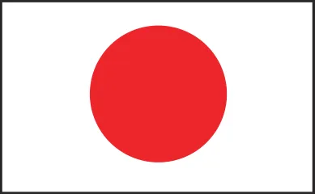
信 号 旗
国 旗競技スタートの信号。
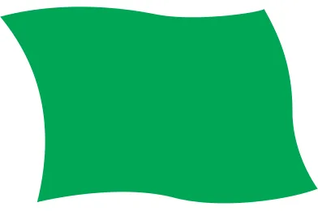
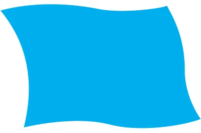
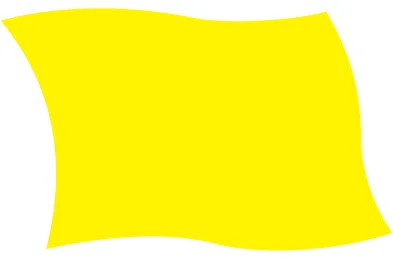
緑 旗前に合図した危険の解除。
青 旗他の競技車が接近航続しつつ追い越す可能性あり。または、まさに追い越そうとしている。
黄 旗危険信号、徐行せよ、追い越しを禁止。
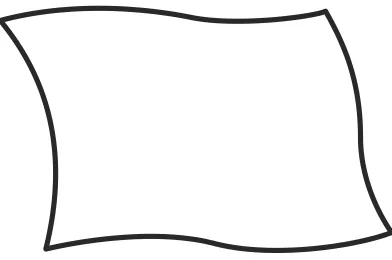
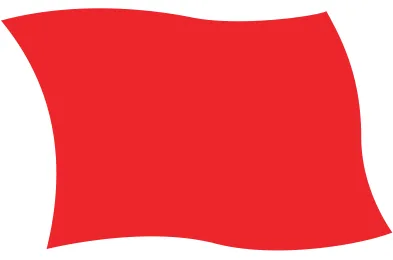
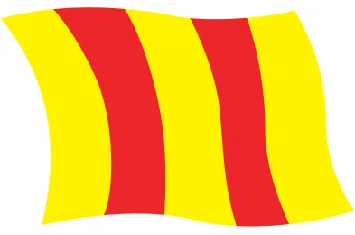
路面が滑り易い。白 旗コース監督車、救急車あるいは消火車等がコースの走路上にいる。または、競技車が低速走行中。
赤 旗（競技長の専用）レース中止。ドライバーは直ちにレースを中止し、オフィシャルから指示された場合はどの地点でも停止できる態勢でスタートラインまで徐行して停止すること。
赤の縦縞のある黄旗
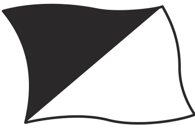
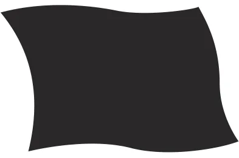
ミススタートを示す。白・黒旗（三角染分）と白数字
黒旗（白数字付）
黄色の山型を付した緑色旗
スポーツ精神に反する行為をしたドライバーに対し、ピット停止を義務付けられる黒旗提示の最終的警告である。
示された数字番号の車両は自分のピットに停止し競技長の所まで出頭すること。
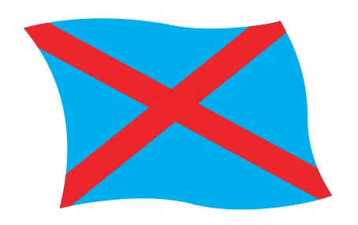
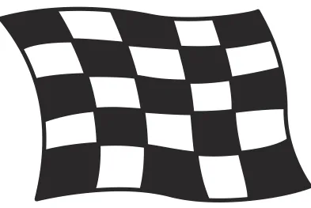
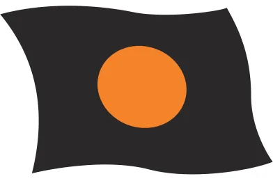
オレンジディスクのある黒旗（番号を添えて提示）
青・赤（2 重対角線で区分）旗追い越されようとしている、もしくは既に追い越されたドライバーの停止を示す。この旗を使用する場合その競技会の特別規則書に規定されていなければならない。
白と黒のチェッカー旗
競技終了の信号。（チェックの大きさは横⅕、縦⅕）
技術的トラブルのドライバーに対する停止命令。修理後再出走できる。